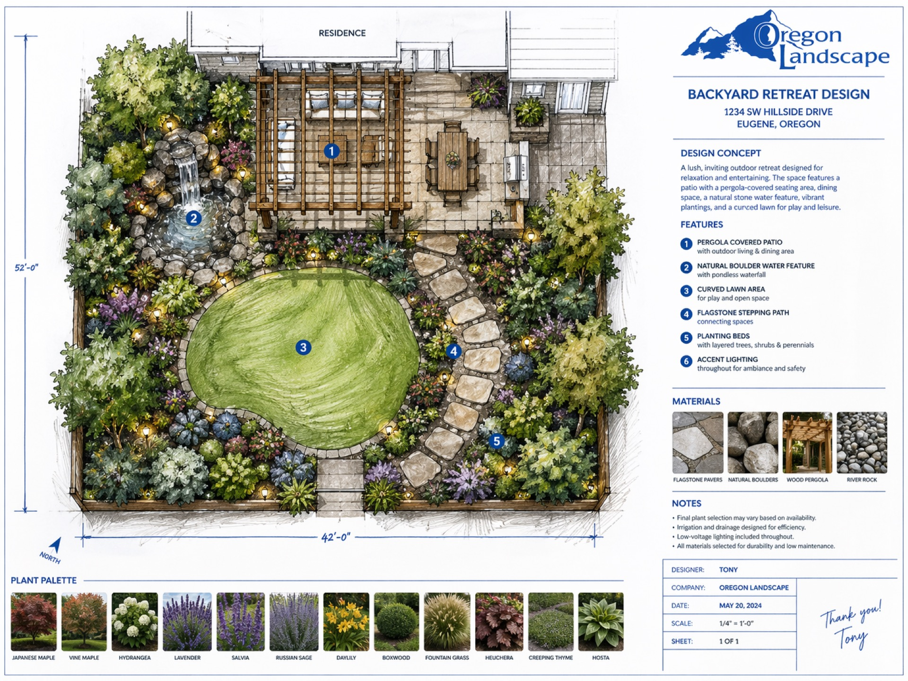

Landscape design for Happy Valley — custom outdoor spaces for newer homes and growing families in one of Oregon's fastest-growing communities.
Happy Valley's rapid growth means many properties are still waiting for the landscape they deserve. New construction lots often come with rough grade and minimal planting — and that's exactly where Oregon Landscape steps in. We take properties from bare ground to finished landscape, coordinating every element from the start.
We design with Happy Valley families in mind: functional lawn areas, low-maintenance plantings, outdoor living spaces that get used, and irrigation systems that keep everything healthy through the dry Oregon summers.
Get a Free Estimate

Natural stone, pavers, and concrete designed to flow with your landscape and stand up to Oregon weather for decades.

Ponds, waterfalls, and fountains that add movement, sound, and life to your outdoor environment.

Fire pits, kitchens, seating walls, and pergolas — outdoor rooms built around the way you entertain and relax.

Architectural and accent lighting designed into the landscape plan so your yard is just as beautiful after dark.

Species selected for Pacific Northwest conditions — four-season interest, right plant in the right place, every time.

Quality lawn installation with smart irrigation systems built into the design from the very beginning.


Happy Valley has grown rapidly over the past two decades with a mix of established neighborhoods and large new subdivisions. Many of our clients here are working from builder-grade landscaping — thin sod, minimal beds, nothing custom — and want to start over with a real design.
Newer developments often have heavily compacted, disturbed soils from construction — topsoil stripped, subgrade graded, then minimal amendments added before sod was laid. We test and amend soil properly and build drainage from the ground up.
Yes — Happy Valley is an incorporated city with its own permitting requirements. Retaining walls over 4 feet, significant grading, and structures require permits, which we manage before design finalizes so there are no surprises during installation.